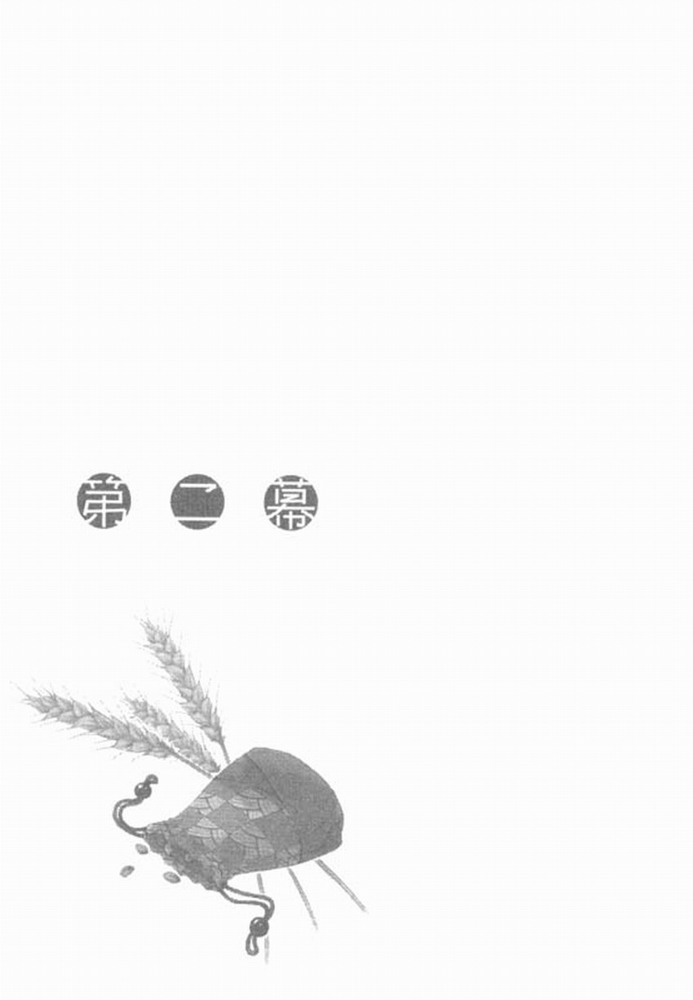

第二幕
一場傾盆大雨從天而降。過了正午不久後，羅倫斯兩人被這場大雨追上。他們在因大雨而變得模糊不清的視線中，發現一間教會，於是匆忙跑進教會。教會有別於修道院，會對羅倫斯這樣的旅行商人、旅人或巡禮者提供住宿，或是為旅行者祈求平安，並且仰賴旅行者的捐款營運。因此，對於羅倫斯兩人的突然到訪，教會的人不但沒有拒絕，還高興地歡迎他們到來？
然而，不管教會再怎麼善意，也不可能讓長著狼耳朵及尾巴的女孩，大搖大擺地進出。於是羅倫斯臨時編了一個謊言，他讓赫蘿套上薄外套，再向教會的人宣稱赫蘿是他的妻子，因為臉部被火灼傷，所以不願意在外人面前脫去帽子。
雖然赫蘿躲在外套底下偷笑，但她似乎也明白自己與教會之間的關係，所以還是配合羅倫斯演戲。赫蘿曾說過教會讓她吃了不少苦頭，這話應該不假吧。
就算赫蘿不是惡魔附身者，而是狼的化身也一樣，這對教會來說都不是重點。因為教會認為除了自己崇拜的神之外，其餘的神都屬於異教，都是惡魔的手下。
羅倫斯兩人穿過教會大門，順利借到了一間房間。當羅倫斯整理好被雨淋濕的行李，再回到房間時，發現赫蘿光著上半身在擰頭髮，水珠「滴答滴答」地從赫蘿美麗的褐色長髮上滴落。羅倫斯心想就算弄濕這滿是破洞的木頭地板，教會的人應該也不會抱怨才對。比起擔心這個問題，羅倫斯更苦惱於不知道該把視線放在哪裡。
「呵，冰冷的雨水正好可以冷敷咱的灼傷。」
赫蘿不顧羅倫斯內心的煎熬，愉快地笑著說道。羅倫斯看不出那謊言是讓她感到好笑。還是不悅。赫蘿撥開貼在臉上的頭髮，隨即以非常豪邁的動作把劉海往上撥。
要說赫蘿那股勇猛豪氣就像狼一樣似乎也不為過，被雨淋濕而散亂的頭髮，看起來也有些像狼強韌的毛髮。
「貂皮應該沒事吧！那些貂皮的毛髮很不錯。或許那些貂成長的山裡頭也有像咱一樣的狼。」
「可以賣得好價錢嗎？」
「這咱可不知道，咱又不是皮草商人。」
羅倫斯點點頭，這答案聽來再合理不過了。接著便脫下身上濕透的衣服，用力擰乾。
「啊，對了！那些麥子該怎麼處理才好？」
羅倫斯—邊說，—邊擰乾上衣，當他正打算把褲子也擰乾時，想起赫蘿的存在，便停手往赫蘿的方向看去。沒料到赫蘿一副當羅倫斯不存在的樣子，早已脫得光溜溜地在擰衣服。羅倫斯看了也不甘示弱，大膽地脫光衣服。
「怎麼處理是指？」
「我的意思是指要去殼比較好，還是保持現狀就好。不過，要談這些，也得是你真的寄宿在那些麥子裡。」
羅倫斯刻意用帶點捉弄的語氣說道。赫蘿聽了並沒有反擊，只是嘴角稍稍上揚了一下而已。
「只要咱還活著，那些麥子就不會腐爛或枯萎。不過，那些麥子如果被吃了、被燒了，或是被磨碎混到土壤裡的話，咱可能就會消失。如果汝覺得佔空間，可以把麥子去殼保存。嗯，這樣做或許比較好。」
「原來如此。那我等會兒把麥子去殼之後。再把麥粒裝到袋子裡好了。你應該會想自己帶著它們吧？」
「嗯，如果可以掛在脖子上更好。」
聽到赫蘿這麼回答，羅倫斯不小心把視線移到她的脖子上，隨即又把視線移開。
「不過，可以留些麥子讓我到其它地方去賣嗎？」
羅倫斯平復心情後開口問道，話一說完便聽到「啪刷啪刷」的聲響。轉頭一瞧，原來是赫蘿正使勁甩著尾巴。尾巴上的毛髮濃密又滑順，甩起水來勁道十足。羅倫斯看著水花四濺，不禁皺起眉頭，一旁的赫蘿卻絲毫不以為意。
「大部分的農作物都是因為長在屬於它的土地上，才會長出豐碩的果實。那些麥子一下子就會枯萎了，去也是白搭。」
赫蘿看著剛擰乾的衣服陷入沉思，但因為沒有其它衣服可穿，只能再穿上被擰得皺巴巴的衣服。不同於羅倫斯身上穿的便宜貨，赫蘿穿的那套衣服質料好，幹得也快。羅倫斯心裡雖然覺得有些不平，還是穿回自己同樣被擰乾的衣服，然後對赫蘿點點頭。
「我們到大廳烘乾衣服。下這種大雨，應該有不少人來這裡避雨，我想暖爐點著了才對。」
「嗯，這點子不錯。」
赫蘿說完後套上外套，蓋住整個頭，接著又咯咯笑了起來。
「有什麼好笑的？」
「呵呵，被火灼傷所以要遮住臉？要是咱啊，絕對不會想到這個。」
「是嗎？那麼，你會怎麼想呢？」
赫蘿稍稍拉高外套露出臉來，然後驕傲地說：
「如果臉上有灼傷，那也屬於咱。就像咱的耳朵和尾巴一樣，都是獨一無二的證明。」
羅倫斯心想，這種說法果然非常符合赫蘿的作風。但另一方面也認為，那是因為赫蘿沒有真的被灼傷，所以才能夠表現得如此輕鬆。
這時，赫蘿的聲音打斷了羅倫斯薩思緒。
「咱知道汝在想什麼。」
外套底下的赫蘿不懷好意地笑著，上揚的嘴角右側露出尖牙。
「要不要試著讓咱受傷看看呢？」
看著赫蘿充滿挑釁的表情，羅倫斯雖然想對上她，但又覺得如果現在意氣用事拔出短劍，事態真的會變得難以收場。
赫蘿剛剛說的話很有可能是發自真心，只不過這種刻意挑釁的態度，應該是她天生愛惡作劇使然吧。
「我是個男人，怎麼可能把那麼漂亮的臉蛋劃傷。」
聽到羅倫斯這麼一說，赫蘿像是收到期待已久的禮物似地露出笑容，然後刻意貼近過去。一陣香甜的氣味隨著赫蘿飄來，刺激著羅倫斯的身體，讓他差點伸手抱住赫蘿。
沒料到赫蘿根本不在意羅倫斯的反應。她用鼻子嗅了嗅羅倫斯，然後稍微挪開身子說：
「汝被雨淋過，身上還這麼臭啊。咱這隻狼都這麼說了，錯不了。」
羅倫斯半認真地揮出拳頭，卻被赫蘿輕鬆躲過而揮了個空。赫蘿一邊嗤嗤笑，一邊微微傾著頭繼續說：
「就算是狼，也會整理自己的毛。汝是長得挺不錯，但好歹要把自己梳洗乾淨些。」
雖然不知道赫蘿是開玩笑還是認真的，但被她這種女孩一說，羅倫斯不禁也認同起來。一直以來，羅倫斯只會注意梳洗乾淨是否對談生意有幫助，從來沒想過梳洗乾淨可以討女孩子喜歡。
談生意的對手如果是女人，或許羅倫斯還會有梳洗乾淨的念頭。然而很可惜，他從未見過女性商人。
羅倫斯不知該怎麼回答，於是別過臉去，沉默不語。
「咱覺得汝的鬍子挺好看的。」
羅倫斯的下巴留著適度的鬍子，一向頗受好評。羅倫斯坦率地接受赫蘿的誇獎，有些驕傲地轉向赫蘿。
「不過，咱比較喜歡鬍子長一些。」
羅倫斯聽了，反射性地想到商人一向不喜歡長鬍子。赫蘿一邊用雙手的食指從鼻子的正中劃線劃到臉頰，一邊說：
「像這樣，像狼一樣的鬍子。」
這下子羅倫斯總算察覺自己被捉弄。雖然覺得這樣做有點沒度量，但羅倫斯還是決定不去理會赫蘿，往房門方向走去。
赫蘿開心地笑著，並跟隨在羅倫斯後頭。
事實上，羅倫斯並不討厭與赫蘿的互動。
「暖爐那兒還有其它人在，你可別露出馬腳啊。」
「咱是賢狼赫蘿吶。再說，還沒到帕斯羅村之前，咱也是以人類的模樣一路旅行過來的。放心放心！」
羅倫斯回頭一看，發現赫蘿已經把頭藏好在外套底下，完全進入狀況了。
對商人來說，位置在城鎮與城鎮間廣大距離之中的教會或旅店，是重要的情報站，特別是在教會能夠遇到各式各樣的人。在旅店通常只能看到老練的商人，或貧窮的旅人，但教會就不同了。從城裡的啤酒師傅到富有的人，教會裡住著形形色色的投宿客。
羅倫斯和赫蘿進來躲雨的這間教會，前前後後來了十二位客人。其中有幾位看來像是商人，其它則像不同職業的人。
「這樣啊，所以你是從約連那邊過來的？」
「是的。我在約連買了鹽之後，隨即把鹽送到客人那兒，再從客人那兒收了貂皮。」
大廳裡每個人坐在地板上，有的人忙著抓衣服上的跳蚤，有的人在用餐。其中就只有這對夫妻坐在椅子上，並霸佔了暖爐正前方的位置。雖說是大廳，但這裡的空間並不大。十二個人擠在這個空間裡，只要暖爐裡燒著滿滿的薪柴，無論在什麼位置都不難把衣服烘乾。不過，這對夫妻的衣服不像被雨淋濕過，以此看來，應該是捐贈大筆款項給教會，所以自認可大方出入這間教會的有錢人。
羅倫斯如此猜測。他豎起耳朵聽著這對夫妻容易中斷的對話，並伺機順利加入他們。
妻子或許是因為旅途勞累而顯得沉默，因此稍有年紀的丈夫對於羅倫斯加入他們的對話，自然表現出歡迎態度，
「不過，要從這裡再回到約連，這不是太折騰人了嗎？」
「這就得靠商人的智慧了。」
「喔喔？有意思，說來聽聽如何？」
「我在約連買鹽的時候，並沒有當場付錢。我把等金額的麥子，賣給了賣鹽那家商行位於另一個城鎮的分行。那時候我沒有跟分行收取麥子的貨款，但也沒有支付鹽的貨款。也就是說，我在沒有現金往來的情況下，完成兩筆交易。」
這是南方的商業國家在一百年前發明的匯兌體制。羅倫斯從他的師傅，也就是旅行商人的親戚口中知道時，深深為這個體制的存在而感動不已。不過，羅倫斯是經過兩個星期的冥思苦索，才理解其中的奧妙。眼前這位稍有年紀的男子只聽了一次，似乎同樣無法理解。
「這……真是非常奇妙啊。」
男子說完頻頻點頭。
「我住在一個叫做佩連佐的城鎮。我的葡萄園從沒有採用過這麼奇妙的方法來買賣葡萄，不知道這樣會不會有問題啊？」
「這種交易體制稱為匯兌，這是商人們為了方便和不同地方的人做生意才發明出來的體制。如果您是擁有葡萄田的領主，只要小心不被被葡萄酒商惡意貶低葡萄的質量，然後便宜收購就可以了。」
「嗯，我們每年都會為了這檔事與酒商爭論。」
雖然男子笑著這麼說。但事實上，想必這位領主請來的會計人員會面紅耳赤地與老奸巨猾的葡萄酒商爭論吧。擁有葡萄園的人多半是貴族出身，但幾乎沒有一個貴族會親自耕作或交涉金錢。所以說，統治帕斯羅村與那附近一帶的亞倫多伯爵是個極其古怪的人。
「你說你是羅倫斯先生吧！下次有機會來到佩連佐時，歡迎你來寒舍拜訪。」
「好的，謝謝您。」
男子沒有提及自己的姓名，這是貴族特有的習慣。他們以為即使自己沒有道出姓名，對方也應該認識自己，所以他們認為由自己說出姓名的行為有失格調。
相信到了佩連佐，只要提到葡萄園的領主，就非這名男子莫屬了吧。如果在佩連佐的城裡，羅倫斯等人或許根本無法與這名男子交談，所以教會是最適合建立這種人脈的場所。
「那麼，因為妻子有些累了，我們先失陪了。」
「希望神能指引我們再次相逢。」
這是在教會裡，人人會講的一句話。男子從椅子上站起身子。和妻子一同輕輕點頭告辭後，走出大廳。羅倫斯從先前男子邀他拿來一同坐著的椅子上站起來，把夫妻兩人剛剛坐著的兩張椅子放回大廳角落。
在大廳裡，只有貴族、有錢人和騎士有資格坐在椅子上，而這三種都是會惹人嫌棄的身份。
「嘿嘿，我說老闆，您真是了不起的人物！」
當羅倫斯收拾好椅子，回到坐在大廳中央的赫蘿身邊時，一名男子挨近過來。從男子的裝扮和舉止看來，應該是個同行。男子被鬍子遮蓋的臉孔看來很年輕，似乎是剛入行沒多久的商人。
「我不過是個隨處可見的旅行商人罷了。」
羅倫斯冷冷地回答，坐在羅倫斯另一邊的赫蘿稍稍把身子坐正。這時，赫蘿套在頭上的外套稍微動了一下。不過，應該只有羅倫斯發現那是赫蘿在動耳朵。
「您客氣了。小的剛剛也一直想加入那對夫妻的對話，只是老找不到機會，但老闆您卻輕輕鬆鬆做到了。想到將來要和老闆這樣的對手競爭，就讓人覺得意志消沉。」
男子露出笑容說，缺了一顆門牙讓他的表情顯得可愛。或許他是故意拔掉門牙，好讓他那有點笨拙的笑容告訴大家自己還是個新手。如果是個商人，就一定知道自己的臉會帶給對方什麼樣的印象。
這男子小看不得。
不過，羅倫斯想起自己還是新手時，也和男子有過同樣的想法。於是他表示贊同地說：
「這沒什麼，我剛踏入這一行時，所有旅行商人在我眼裡看來都是妖怪；到了現在，也仍然覺得一半以上的人是妖怪。儘管如此，總還是可以混碗飯吃，凡事靠努力啊。」
「嘿嘿！聽到您這麼說，小的就安心多了。啊！小的名叫傑廉。我想您應該看出來了，小的是剛入行的旅行商人，還請多多關照。」
「我是羅倫斯。」
羅倫斯想起自己剛踏入這一行時，為了多認識旅行商人，也是像這樣到處與人搭訕。當時他曾經因為所有人的態度都很冷淡而生氣，然而如今自己變成被新手搭訕的對象後，也就能理解當初大家為什麼對他冷淡了。
初入行的旅行商人只能一味從別人身上找情報，自己卻沒有任何情報可以給人。
「呃……啊，那位是您的同伴嗎？」
不知道傑廉是因為沒有任何情報可以提供，還是犯了新手常會有的毛病——就是想盡辦法在自己不提供任何情報之下，多得到一些情報的毛病，他開口問道。如果是兩個老經驗的旅行商人對談，相信早就互相交換了好幾個相稱的交易情報。
「我妻子赫蘿。」
雖然羅倫斯猶豫著是否該使用假名，但後來想想，認為沒那個必要。便如此回答。
羅倫斯一提到赫蘿的名字，她便輕輕點頭向傑廉打招呼。
「喔，夫妻倆一同行商啊？」
「妻子生性古怪，認為待在家裡不如待在馬車上好。」
「不過，老闆您讓妻子這樣套著外套，還真是保護周到呢。」
或許傑廉以前曾是城裡的市井無賴，他的能言善道讓羅倫斯有些佩服。不過，旅行商人親戚曾告誡過羅倫斯，最好不要用像他這樣的態度說話。
「嘿嘿，男人的本性就是越看不到，就越想看。我們能夠在這裡相遇，也算是神的指引。能不能就看在這個份上，讓小的見見夫人一面啊？」
真是厚顏無恥！儘管赫蘿並非真是羅倫斯的妻子，但羅倫斯還是忍不住這麼想。
然而，就在羅倫斯打算出聲責怪時，赫蘿本人卻開口說：
「旅行唯有出發前最愉快；狗兒唯有叫聲最嚇人；女人唯有背影最美麗。隨隨便便地拋頭露面，會壞了人家的美夢。這種事情咱做不來。」
赫蘿說完後，在外套底下輕輕笑了笑。傑廉被赫蘿這麼一說，只能尷尬地笑笑。就連羅倫斯都非常佩服赫蘿的妙語如珠。
「嘿嘿……夫人真是了得。」
「光是想要怎麼不被踩在腳底下，就夠我受了。」
這句話有一半以上是發自羅倫斯的真心。
「小的想，能夠與兩位相遇一定是神的指引。不知道兩位有沒有興趣聽聽小的說話？」
就在沉默降臨的那一瞬間，傑廉露出缺了門牙的笑臉，挨近羅倫斯說道。
教會不同於一般的旅館，雖然會提供房間，但不會為投宿客打點飲食。不過，只要捐款就可以使用鍋子。羅倫斯捐款借來鍋子，並把五顆馬鈴薯放入裝了水的鍋子裡。當然了，生火所需的薪柴必須另外付費。
趁著等待馬鈴薯煮熟的空檔，羅倫斯隨手把赫蘿寄宿其中的麥子去殼，再找來沒有用到的皮袋，把去好殼的麥粒裝進去。羅倫斯想起赫蘿說過想掛在脖子上，於是拿了一條皮繩回到鍋子旁。馬鈴薯、薪柴，皮袋及皮繩，這些全部加起來也是一小筆錢，羅倫斯一邊在心裡盤算要向赫蘿收多少錢，一邊拿著煮熟的馬鈴薯走回房裡。
羅倫斯因為雙手拿滿東西所以沒能敲門，但擁有狼耳朵的赫蘿似乎靠腳步聲就能夠分辨來者何人。就算如此，羅倫斯進到房間，赫蘿竟是連頭也不回地坐在床上，悠哉地梳理著尾巴的毛。
「嗯？好香的味道。」
赫蘿抬起頭說，她的鼻子似乎和耳朵一樣靈敏。
馬鈴薯上面放了少許山羊乳做成的奶酪。羅倫斯在獨自行商時從不曾如此享受，但今天是兩個人，所以他決定慷慨拿出奶酪。看到赫蘿開心的反應，也就覺得挺值得的。
羅倫斯把馬鈴薯放在床邊的桌子上，赫蘿立刻從床上伸手準備拿馬鈴薯。就在赫蘿的手快要抓到馬鈴薯時，羅倫斯把裝滿麥粒的皮袋丟給了她。
「哇哇。嗯？是麥子啊。」
「還有皮繩，你自己想辦法掛在脖子上吧。」
「嗯，感恩，不過，還是吃飯先！」
赫蘿隨便把皮袋及皮繩放在旁邊，那動作之草率讓羅倫斯嚇了一跳。赫蘿一副口水直流的表情，把手伸向馬鈴薯。看來，對赫蘿來說，吃飯似乎比什麼都重要。
赫蘿拿了一顆大馬鈴薯，並迅速掰成兩半。看著熱氣立刻從馬鈴薯冒出來，赫蘿的臉上漾起幸福的笑容，尾巴像只小狗一樣甩來甩去。雖然羅倫斯覺得那模樣好笑，但他知道如果說出口，肯定會惹得赫蘿發怒，所以也就作罷。
「狼也會覺得馬鈴薯好吃啊？」
「嗯？咱們狼又不是整年都吃肉。咱們會吃樹上的嫩芽，也會吃魚。人類種的蔬菜比嫩芽還要好吃。還有，咱挺喜歡人類想到把肉或蔬菜用火燒過的點子。」
聽說貓舌頭怕燙，但狼看起來似乎沒有這樣的困擾。赫蘿拿著熱呼呼的半顆馬鈴薯，只吹了兩三次氣，就整個放入口中。才覺得赫蘿吃得太大口，果然她就被噎著了。羅倫斯把裝著水的皮袋丟給赫蘿，解救了她。
「呼，嚇咱一跳。人類的喉嚨果然還是太窄，真不方便。」
「狼嘛，當然是狼吞虎嚥了。」
「嗯。汝瞧，那是因為狼沒有這東西，所以沒法兒慢慢咀嚼。」
赫蘿用手指勾著嘴角往外拉，她指的應該是臉頰吧。
「不過，咱以前也曾經因為吞下馬鈴薯而被噎著。」
「喔。」
「或許咱天生跟馬鈴薯不合吧。」
羅倫斯心想：單純只是你吃得太猴急了！但沒有說出口。
「話說。」
羅倫斯開口道：
「你不是有說過可以識破謊言之類的話？」
聽到羅倫斯這麼詢問，赫蘿一邊咬著奶酪，一邊回過頭來。赫蘿正要開口說話，下一瞬間卻猛地把視線移到另一個地方，頓了半秒之後伸出手。
在羅倫斯還來不及問出「怎麼了」的轉瞬間，赫蘿的手便像是抓住什麼般停在半空中。
「竟然還有跳蚤！」
「你那麼整齊的長毛，當然是跳蚤的最佳溫床。」
在運送毛織物或毛髮較長的皮草時，有時會因季節不同而湧出大量跳蚤，必須靠煙熏才能夠消滅——羅倫斯是因為想起這樣的經驗才說出這種話。但赫蘿聽了之後，先露出驚訝的表情，隨後又立即挺起胸膛，一臉得意地說：
「汝也知道咱的尾巴漂亮，挺有眼光的。」
看見赫蘿像個孩子似的得意模樣，羅倫斯決定還是不要把自己聯想到的事情說出來。
「你說可以分辨別人有沒有說謊，那是真的嗎？」
「嗯？喔，多多少少可以。」
赫蘿把捏死跳蚤的手指擦乾淨後，又開始吃起馬鈴薯。
「可以分辨多少呢？」
「這個嘛，咱知道汝剛剛提到咱的尾巴時，其實並沒有要誇獎的意思。」
羅倫斯嚇了一跳，登時啞口無言，一旁的赫蘿開心地笑笑。
「是沒有到百發百中的程度啦。至於信或不信，那就是汝的事了。」
赫蘿舔了舔沾在手指頭上的奶酪，有些惡作劇地笑著說，那模樣彷彿是幻想世界裡會出現的妖精或小惡魔。
羅倫斯確確實實被赫蘿懾住，但這時如果過度反應的話，不知道赫蘿又會爆出什麼料來。羅倫斯打起精神接續先前的話題：
「那麼，我想問你一下，你覺得剛剛那個小毛頭說的話可信嗎？」
「小毛頭？」
「那個在大廳裡跟我們搭腔的傢伙。」
「喔喔。呵呵，小毛頭啊。」
「有什麼好奇怪的？」
「對咱來說，兩個都是小毛頭。」
羅倫斯心想如果回答不好，大概又會被捉弄一番，所以硬是把卡在喉嚨的話吞了回去。
「呵，看來汝比他成熟些。話說那小毛頭，咱覺得他在說謊。」
聽到赫蘿的話，羅倫斯頓時恢復冷靜，心中喃喃「果然沒錯」。
在大廳裡向羅倫斯搭腔，名叫傑廉的年輕旅行商人，提了一個發財的機會。
那就是目前所發行的某種銀幣，將在不久後發行含銀量較高的新銀幣。如果這消息正確，那麼，舊銀幣的品質雖然比新銀幣來得差，但還是能夠擁有相等於新銀幣的價值。然而，與其它貨幣相比時，含銀量較高的新銀幣卻又勝過舊銀幣。也就是說，如果事先知道哪種貨幣會發行新銀幣，只要大量收集舊銀幣，再換成新銀幣，就可以靠賺取差額發一筆橫財。傑廉向羅倫斯表示，他能提供流通在世上的各種貨幣當中，哪種貨幣可以利用這種差額方式賺錢的情報。不過相對地，羅倫斯必須把賺取的利益分一份給他。羅倫斯當然不可能全盤相信傑廉說的話，他知道傑廉一定也向其它商人說過同樣的話。
赫蘿看看遠方，回想當時她偷聽到的談話內容，接著把拿在手上的馬鈴薯塊放入口中，吞下後開口說：
「咱是不知道哪個部分是謊言，也不清楚詳細的談話內容啦。」
羅倫斯點點頭，開始思考，他並沒有期待赫蘿能夠清楚說出哪一個部分是謊言。
只要貨幣交易本身不是子虛烏有的事，就可以推論出，傑廉在有關銀幣的部份上扯謊了。
「貨幣的投機交易並不是什麼稀奇的事，只不過……」
「不明白他說謊的理由，是吧？」
赫蘿先去掉馬鈴薯芽，接著把馬鈴薯放入口中。羅倫斯歎了口氣。
或許赫蘿早就把羅倫斯踩在腳底下了。
「說謊的時候，重點不在於說謊的內容，而在於為何要說謊。」
「你以為我花了多少年才明白這個道理？」
「是嗎？雖然汝剛剛說那個叫傑廉的男子是個小毛頭，但是在咱看來啊。汝根本就是五十步笑百步吶。」
赫蘿得意地笑著說。羅倫斯只有在這種時候，才會不禁希望赫蘿不是個人類。如果說外表看來年輕的赫蘿，早已知道羅倫斯費盡千辛萬苦才學到的一些道理，那也未免太讓人難堪了。
就在羅倫斯思考的時候，卻聽到赫蘿意外的發言。
「如果咱不在這兒的話，汝會怎麼判斷？」
「嗯……我會先不判斷是謊言還是真話，假裝接受傑廉的提議。」
「為何要這麼做？」
「如果是真話，只要順著事態發展下去就有錢賺；如果是謊言，就表示有某人在計謀些什麼。遇到這種情形，只要謹慎點不要被騙的話，大致上來說還是可以發到財。」
「嗯。那麼，既然咱在，又跟汝說那是謊言，汝會？」
「嗯？」
羅倫斯發現赫蘿似乎話中有話，最後他終於發現了。
「……啊。」
「呵，汝一開始就不必煩惱這個問題。不管怎樣，汝都會假裝接受提議，是吧？」
看著赫蘿顯得有些邪惡的笑臉，羅倫斯卻找不到半點字眼反駁。
「最後這顆馬鈴薯是咱的。」
赫蘿從床上伸手拿起桌上的馬鈴薯，開心地把馬鈴薯剖成兩半。
懊惱不已的羅倫斯卻是連掰開手上第二顆馬鈴薯的心情都沒有。
「咱是賢狼赫蘿吶，汝以為咱比汝多活了幾十倍呀。」
聽到赫蘿因顧慮到羅倫斯的感受而刻意這麼說，羅倫斯的心情變得更煩悶了。他抓起馬鈴薯，用力咬了一大口。
羅倫斯不禁想起初拜旅行商人親戚為師時，那種當學徒的心情。
隔天，天空明麗，一片秋高氣爽。教會的早晨比商人來得更早，當羅倫斯醒來時，早晨的日課已經結束。羅倫斯對於教會的作息已相當熟悉，所以不覺訝異。然而，當他走到外面的水井洗臉時，卻看到原以為跑去上廁所而不在房裡的赫蘿，與教會的人一同從聖堂裡走出來，讓他吃了一驚。赫蘿雖然有把外套套在頭上低著頭走路，但卻不時與信徒們親密地交談。
不承認豐收之神存在的信徒們，與豐收之神本尊親密交談的光景雖然有趣，但很遺憾，羅倫斯並沒有享受此般樂趣的膽量。
赫蘿與信徒們告別，安靜地走到站在水井旁一臉愕然的羅倫斯身邊，然後把小小的雙手交叉擺在胸前，小聲說道：
「希望咱的丈夫可以更有膽量些。」
羅倫斯把因冬天將臨而顯冰冷的秋天井水毅然地從頭上往下倒，假裝沒聽見赫蘿在一旁發出的咯咯笑聲。
像赫蘿昨天甩動尾巴把水甩幹那樣，羅倫斯也用力甩甩頭髮。然而，一旁的赫蘿卻一臉不為意地說：
「咱發現教會的地位還真是提高不少。」
「教會的地位從前就很高了吧。」
「沒那回事，咱從北方初來到這裡時，可不像現在這樣。那時教會的人誇張地說唯一的神與十二名天使創造出世界，人類則借用了那個世界。大自然根本不是任何人可以創造的，咱還以為教會的人什麼時候開始學會說笑話了呢。」
這話聽起來有些像自然學者時而提出的批評教會言論，但從當了好幾百年豐收之神，自稱賢狼的赫蘿口中說出，讓羅倫斯更覺得有趣。羅倫斯擦乾身體穿上衣服，並不忘把錢投入水井旁邊的捐贈箱。每當有人使用過水井，教會的人就會查看捐贈箱。如果發現捐贈箱裡沒錢，他們就會說出不吉祥的話，讓使用的人不安。對於不停地旅行的羅倫斯來說，可不想聽到不祥的宣告。
不過，羅倫斯放進捐贈箱的錢幣是錢包裡頭最不值錢，黑糊糊且磨損嚴重的劣質銅幣。
「這算是時代的變遷吧，看來應該是變了許多吶。」
赫蘿指的或許是故鄉吧，她在外套底下的神情看來有些落寞。
羅倫斯輕輕敲了赫蘿的頭說：
「你自己變了嗎？」
「……」
赫蘿沉默地搖搖頭，那動作看來十分孩子氣。
「既然你沒變，故鄉也一定沒變啊。」
雖然年紀還輕，但羅倫斯自認已走過不少歲月風霜。正因為一路以來，羅倫斯踏遍各地，與各種不同人相遇，累積各種不同經驗，所以他有資格對赫蘿說出這樣的話。
只要是旅行商人，即使是離家出走憤而離開故鄉的旅行商人，都會理所當然地重視自己的故鄉。在他鄉能夠安心依靠的也只有同鄉的人。
所以，每當旅行商人遇到多年不曾回到故鄉的人時，都會這麼說。
赫蘿點了點頭，從外套底下探出臉說：
「如果被汝安慰，就太有損咱賢狼的名譽了。」
赫蘿笑著說完，便轉身往房間的方向走去。赫蘿轉身時的眼神，似乎在向羅倫斯道謝。
如果赫蘿的態度徹底是一個聰明絕頂、上了歲數的賢人，羅倫斯還有辦法應付。
然而，赫蘿時而表現出來的孩子氣舉動，總會讓羅倫斯不知所措。
今年二十五歲的羅倫斯如果是一般人的話，早已娶妻生子，帶著妻小一同上教會。對於人生已走了一大半的羅倫斯來說，赫蘿這樣的舉動總是毫不客氣地闖入他單身寂寞的心裡。
「喂，快來啊！汝在發什麼呆？」
赫蘿在不遠的地方，回過頭來喊羅倫斯。
雖然和赫蘿相遇只過了兩天的時間，但感覺卻不像這樣。
羅倫斯終究還是向傑廉表示自己願意接受他的提議。
然而，傑廉不可能只憑與羅倫斯的口頭約定，就把所有情報告訴羅倫斯；而羅倫斯也不可能先付訂金給傑廉。不管怎麼說，羅倫斯得先賣了貂皮才有現金，於是兩人最後決定約在河口城鎮帕茲歐，在公證人的見證下簽訂正式合約。
「那麼，小的就先走一步了。等你們到了帕茲歐切安頓好後，請到一間叫做優倫朵的酒吧，在那裡就可以聯絡到小的。」
「優倫朵嗎？知道了。」
傑廉露出他那可愛的笑臉散了個禮，便扛起裝滿乾果的麻袋往前走去。
初入門的旅行商人首先會做的事情除了生意之外，更重要的是到各個地方熟悉當地的人事物，同時讓對方記住自己。這個時候最適合帶著走的商品就是保存期限久，還可以當成聊天話題並在教會或旅館裡兜售的乾果或肉乾。
羅倫斯回想起自己擁有這輛車之前的歷程，看著傑廉的背影不禁懷念起來。
「咱們不跟他一起走嗎？」
傑廉的身影已遠得快要看不見時，赫蘿才突然開口問起。至於這段時間赫蘿在忙些什麼，那就是她看四下無人，便大方地梳理起尾巴的毛。
可能是因為必須套上外套藏住耳朵的關係，赫蘿對於她的栗色長髮一點兒也不在乎，只是用細麻繩隨便紮起來，以免散亂而已。雖然羅倫斯很想建議赫蘿至少用梳子梳一下頭髮，但可惜羅倫斯並沒有梳子。羅倫斯心想：到了帕茲歐後，要替赫蘿買把梳子還有帽子。
「昨天下了一天的雨，所以路上變得泥濘，用走的絕對比坐馬車還要快。沒必要讓他跟著馬車一起慢慢走吧。」
「說的也是，商人最在乎時間了。」
「時間就是金錢。」
「呵呵，很有趣的話。時間就是金錢啊。」
「只要有時間，就可以多賺錢不是嗎？」
「嗯，確實如此。不過，咱就沒有這樣的想法。
赫蘿一說完，又把視線拉回尾巴。
那是一條自然垂下之後，長度足以超過膝蓋後頭的漂亮尾巴。尾巴的毛髮濃密，如果把毛剃下來賣，相信可以賣個不錯的價格。
「你守護了好幾百年的農夫們，應該也對時間很在意吧。」
羅倫斯把話說完後，才發現不該提這個話題。赫蘿看了羅倫斯一眼，彷彿在說「你欠我一次了」似地不懷好意笑著。
「哼。汝的眼睛到底長在哪裡？那些傢伙不是對時間在意，而是對空氣在意，」
「……不懂。」
「聽好，那些傢伙是因為清晨的空氣醒來、因為早晨的空氣耕作、因為午後的空氣拔草、因為雨天的空氣搓繩子、因為風兒的空氣擔心農作物、因為春天的空氣促使發芽而歡喜、因為夏天的空氣促使生長而喜悅、因為秋天的空氣促使收割而開心、因為冬天的空氣而等待春天到來。那些傢伙根本就不在意時間，他們的注意力都在空氣上，咱也一樣。」
羅倫斯雖然無法完全理解赫蘿說的話，不過卻也覺得有些地方她講得有道理。看到羅倫斯表示欽佩地點點頭，赫蘿一臉得意地挺起胸，用鼻子發出哼聲。
這只自稱是賢狼的狼，似乎一點也沒有隱者或賢人般表現謙虛的想法。
就在這時，道路的另一頭走來外表看似旅行商人的路人。
赫蘿雖然套上外套，但是卻沒有藏起尾巴的意思。
就這樣擦身而過的旅行商人只是一直盯著赫蘿的尾巴看，並沒有說話。
他們應該不會認為那是赫蘿的尾巴。如果換成是羅倫斯，也頂多只會猜測那是什麼皮草，又值多少錢罷了。
然而，論到能不能毫不在乎地做到這件事，則又另當別論了。
「汝的腦筋雖然轉得快，但經驗還是不夠。」
可能是已經梳理好尾巴了，赫蘿放開手中的尾巴，並把尾巴收在腰巾裡頭後，從外套底下抬頭看著羅倫斯說道。外套底下的臉孔是年約十五歲上下的女孩，有時候看起來甚至更年幼。
然而，這樣的女孩所說的話，卻跟閱歷豐富的老江湖沒兩樣。
「但是反過來說，只要經過歲月的累積就可以變成有智慧的人。」
「你是說幾百年後嗎？」
羅倫斯知道赫蘿想要捉弄他，於是趁機反擊。
赫蘿先是露出吃驚的表情，隨後又大聲笑了出來。
「哈哈哈哈哈，汝的腦筋轉得真快。」
「應該只是你的腦袋用了太久，變得老舊不堪用吧。」
「呵呵呵呵。汝知道狼為什麼要在山裡頭襲擊人類嗎？」
赫蘿突然轉變話題，羅倫斯一時無法跟上，只能毫無防備地回答說：
「不知道。」
「那是因為狼想吃人類的腦袋，好得到人類的智慧。」
赫蘿奸笑著說道，嘴裡露出兩根閃亮的尖牙。
就算赫蘿是在開玩笑，仍然讓羅倫斯感到毛骨悚然，倒抽了一口氣。
過了幾秒鐘，羅倫斯知道自己輸了。
「汝還太嫩了，根本不是咱的對手。」
赫蘿輕輕歎了口氣，丟下這句話。羅倫斯握緊手中的韁繩，控制自己不露出悔恨的表情。
「話說，汝曾經在山裡頭被狼襲擊過嗎？」
被有著狼耳朵、尾巴及尖牙的赫蘿這麼一問。讓羅倫斯覺得十分不可思議。既蠻橫又恐怖的深山野狼，就在他的身邊跟他說話。
「有，嗯……八次左右吧？」
「很難對付是吧？」
「是啊，如果是野狗群還好，狼群就難對付了。」
「那是因為狼想盡量多吃點人類，好得到……」
「我認錯，別再說了。」
羅倫斯第三次遭狼襲擊，是在組成商隊的時候。
商隊裡的兩名成員終究無法下山，那時的哀號聲至今仍在羅倫斯的耳中盤旋著。
羅倫斯臉上不自覺地變得毫無表情。
「啊……」
聰明的賢狼似乎察覺到異狀了。
「抱歉……」
一臉歉意的赫蘿垂下肩膀，縮著身體小聲地說。
然而，羅倫斯根本沒有心情回答赫蘿。因為他有過太多次遭到狼群襲擊的恐怖經驗，而那些記憶接二連三地在他的腦海裡浮現。
啪滋，啪滋，馬兒走在泥濘上的腳步聲持續了好一段時間。
「……生氣了？」
開口說話的是聰明的賢狼。她一定知道只要這麼問，羅倫斯就無法真的回答自己在生氣。
於是羅倫斯故意回答說：
「是在生氣沒錯。」
赫蘿沉默地抬頭看著羅倫斯。羅倫斯斜眼看了赫蘿一眼。發現赫蘿微微嘟著嘴，那可愛的模樣讓羅倫斯差點原諒了她。
「我真的在生氣，不准再開這樣的玩笑了。」
最後，羅倫斯只好別過頭去，對赫蘿說道。
赫蘿誠懇地點點頭看向前方，她在這方面似乎挺坦率的。
過了一會兒後，赫蘿終於打破沉默開口說：
「狼群只會在森林裡生活，而狗兒曾經被人類飼養過。這就是狼跟狗攻擊性不同的地方。」
雖然羅倫斯可以不理會赫蘿的發言，可是接下來恐怕就很難再找話題繼續談下去。於是羅倫斯稍稍把臉轉向赫蘿，擺出洗耳恭聽的姿態說：
「……嗯？」
「狼只知道人類會狩獵，人類是恐怖的存在。所以咱們狼時時刻刻都在思考，當人類進入森林時，咱們要採取什麼樣的行動。」
赫蘿的眼神直直地看著前方，羅倫斯第一次看到她這麼認真說話。
羅倫斯不覺得赫蘿是臨時編造這番話，於是態度帶點保留地緩緩點頭。
然而，有件事情令羅倫斯覺得在意。
「你也吃過……」
羅倫斯的話還沒說完，赫蘿就拉住他的衣服。
「就算是咱，也有不能回答的事，」
「唔……」
羅倫斯一邊在心裡責備自己沒經過思考就亂說話，一邊說出「抱歉」兩字。
這時赫蘿的臉上突然露出笑容說：
「這樣就算扯平了吧。」
賢狼果然不是只活了二十五年的人可以對付的。
在這之後，兩人沒有再開口說話，但也不覺得尷尬。馬車平穩地朝目的地前進，過了中午之後，轉眼間就到了日落時分。
旅行商人在下過雨後的隔天，只要天色一暗，就絕對不會繼續趕路。因為他們知道就算馬車上的貨物再少，一旦馬車的車輪陷入泥濘裡，十次裡有七次抬不起來。
想靠行商穩穩賺錢的不二法門，就是盡量減少損失。對旅行商人們來說，雨天過後的路面可謂危機四伏。
「汝跟咱活著的世界大不相同吶。」
在訴說著明天也是晴朗好天氣的星空下，窩在貂皮堆裡的赫蘿突然說出這句話。
（第二幕 完）